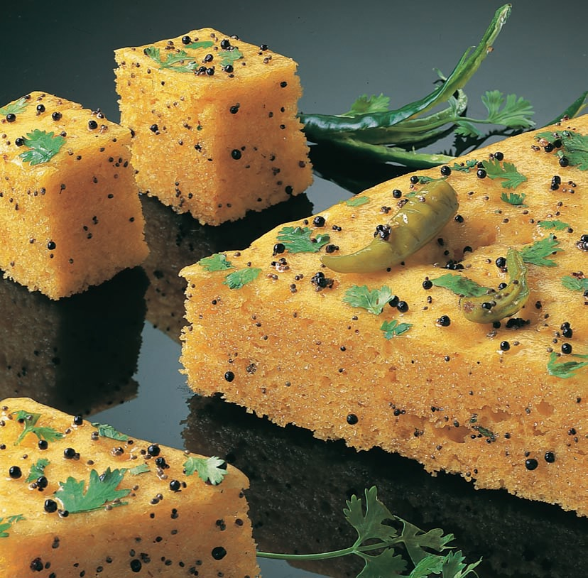
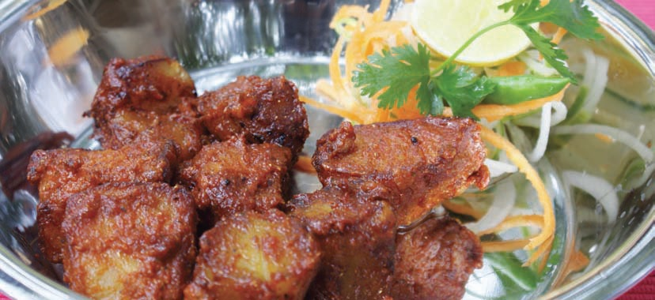
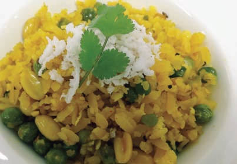

|
|
KHAMAN (Yellow) DHOKLA
 |
INGREDIENTS
2 cups Chana Dal
½ tsp Soda bicarbonate
2 cups Water
¼ tsp Asafoetida (hing)
4 Green chillies, made into paste
½" pc Ginger
5 tbsp Oil
Salt to taste
FOR TEMPERING
¼ tsp Mustard seeds (sarson)
8 Curry leaves (kari patta)
FOR GARNISHING
½ cup Coriander leaves, chopped
½ cup Coconut, grated
METHOD
Soak the dal in water to cover, overnight. In the
morning, grind it a little coarsely. Let it stand covered
overnight again. Once the dal has fermented, add
half the oil, salt, asafoetida, green chilli paste, ginger
and soda bicarbonate mixed with a little water. Beat
thoroughly once again. Grease a large microwave
baking dish (2" deep) with a little oil. Spread the
mixture in it to a thickness of 1". Stand in another
dish of hot water. Microwave, covered, on 600W for
12 minutes. To check the Dhokla for readiness, pierce
it with a fork. When done, the fork will come out
clean. Once the Dhokla is cool, cut into 1½" cubes.
Combine remaining oil and mustard seeds, add curry
leaves. Microwave on HIGH for 2½ minutes and pour
over the Dhokla. Garnish with grated coconut and
chopped coriander leaves. Serve warm or cold. |
|
|
ALOO KAND CHAAT
 |
INGREDIENTS
1 cup Potatoes, peeled and cubed
1 cup Purple yam (kand), peeled and cubed
¼ cup Chopped onions
¼ cup Chopped coriander
2 tbsp Chopped mint leaves
1 tsp Butter
MIX INTO A MASALA
½ tsp Chilli powder
1 tsp Roasted cumin seeds (jeera) powder
½ tsp Dried mango powder (amchur)
½ tsp Black salt
½ tsp Sugar
METHOD
Combine the potatoes, kand and butter in a bowl.
Add 1tsp of water. Mix well. Microwave on HIGH for
6 minutes. Stir once in-between after 3 minutes. Take
out and let it cool. When potatoes and yam are
cooled, add onions, coriander, mint and the mixed
masala. Mix well. Garnish with fresh coriander
leaves. Serve. |
|
|
POHA
 |
INGREDIENTS
100 gm Flattened rice (chewra)
20 gm Green peas
15 gm Peanuts
15 gm Cashew nuts (kaju)
3 gm Mustard seeds
2 gm Cumin seeds
20 gm Chopped onion
5 gm Curry leaves
2 gm Ginger
2 gm Green chillies
2 gm Coriander
1 Lemon, squeezed
20 gm Grated coconut
2 gm Red chilli powder
2 gm Turmeric powder
20 ml Refined oil
20 ml Coconut oil
Salt to taste
METHOD
Heat oil (refined oil) in a microwave-proof bowl for 2
minutes. Soak chewra in lukewarm water for 2
minutes. Drain the water, keep aside. Add cumin and
mustard seeds. Microwave again for 1 minute. Add
chopped onion, ginger, green chillies, curry leaves,
turmeric powder, red chilli powder, green peas,
peanuts and cashew nuts. Microwave again for 1
minute. Add chewra. Mix well with spoon. Sprinkle
coconut oil and half of the grated coconut. Add
2tbsp of water. Cover bowl with plastic wrap.
Microwave again for 1 minute. Remove the plastic
wrap. Add lemon juice. Garnish with grated coconut. |
SPECIAL NOTES: While heating oil, the bowl
becomes very hot. Please be careful and always use
oven gloves for holding the bowls. |

|
|
.jpg)